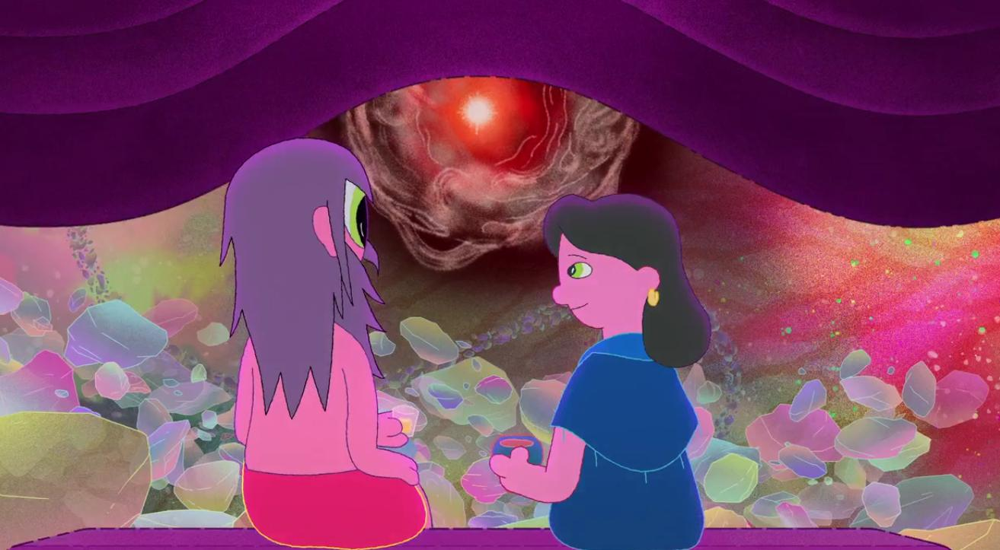

Episodio 8: Mouse of Silver

Sinopsis
Deneen fue psicóloga, en algún momento de su vida dejó su profesión para dedicarse a la crianza de sus tres hijos. Más tarde, le diagnosticarían cáncer de mama, con el que convivió durante cuatro años. Fue en ese momento de su vida cuando vivió de una manera más consciente, aceptando su muerte. En el episodio Mouse of Silver, se la ve en una nave espacial meditando, rodeada de osos de peluche vestidos de médicos y científicos. Cuando Clancy estaba a punto de ir a un planeta simulador, aparece una puerta rosa, al atravesarla se convierte en un bebé y se maravilla al ver a Deneen, y procede a entrevistarla.